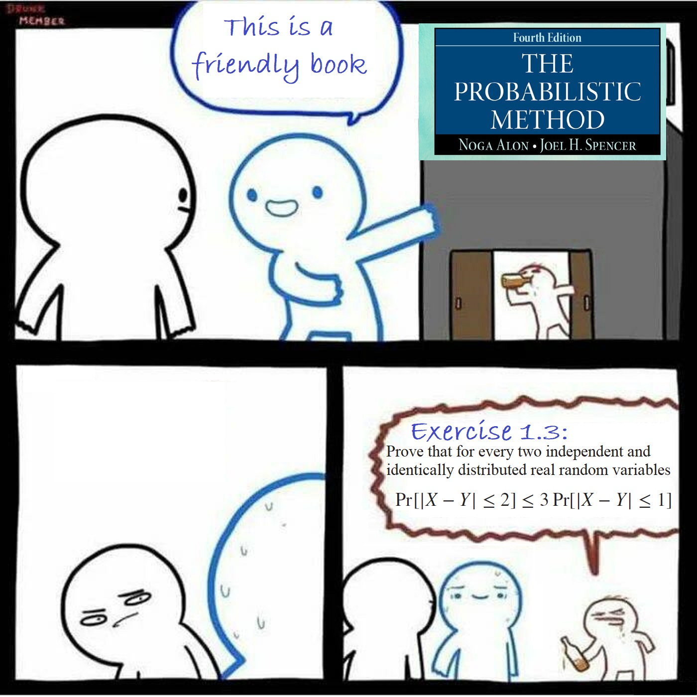

Center on Frontiers of Computing Studies
Peking University
Email: pw384 AT pku D0T edu D0T cn (current address; may change after graduation)
I am a grade-4 undergraduate student at Peking University, majoring in computer science. Currently I am doing research under the supervision of Xiaoming Sun at Institute of Computing Technology, Chinese Academy of Sciences. I spent an unforgettable summer at University of Edinburgh under supervision of Heng Guo, and I am inspired by him a lot.
My research interest lies in several topics in theoretical computer science. To be more precise, I enjoy problems with inspiring combinatorial structures. That includes, randomness in computation, sampling and counting, Boolean functions, and graph theory.
Aside from academic topics, I am also fond of abundant recreations, from playing bass guitar to video games. Unfortunately, my busy days force me to put those hobbies aside.
The photo at the top of this page was shot on the Portobello Beach at Edinburgh, UK.
On the Degree of Boolean Functions as Polynomials over $\mathbb{Z}_m$
Joint work with Xiaoming Sun, Yuan Sun, Kewen Wu, Zhiyu Xia, and Yufan Zheng
ICALP 2020
arXiv: 1910.12458.
Introduction to the Theory of Computation (04833440, 2020 Spring, TA)
Randomized Algorithms (04834010, 2020 Spring, TA)
Past:
Introduction to Computer Systems (04833040 / 04832363, 2019 Fall, TA)
Introduction to the Theory of Computation (04833440, 2019 Spring, TA)
Introduction to Computer Systems (04833040 / 04832363, 2018 Fall, TA)
Book reading group at Peking University: Computational Complexity: Modern Approaches (2019 Fall)
I am currently participating as an editor in the project OI-Wiki. Let’s support this outstanding project!
(Under construction)

Special thanks to Linkin Park for helping me go through those hard time.